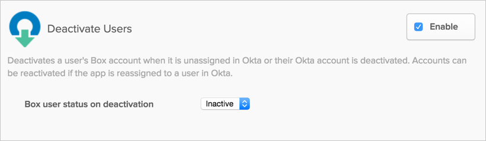
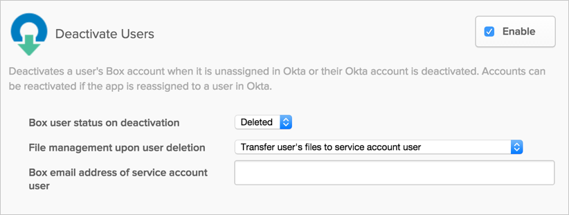
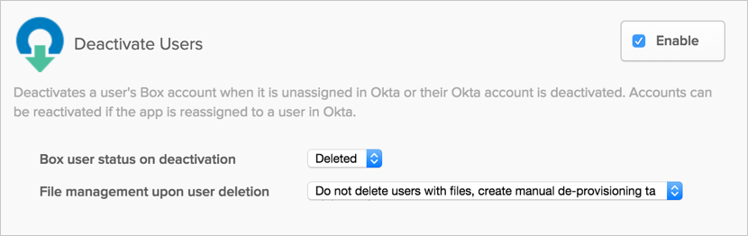
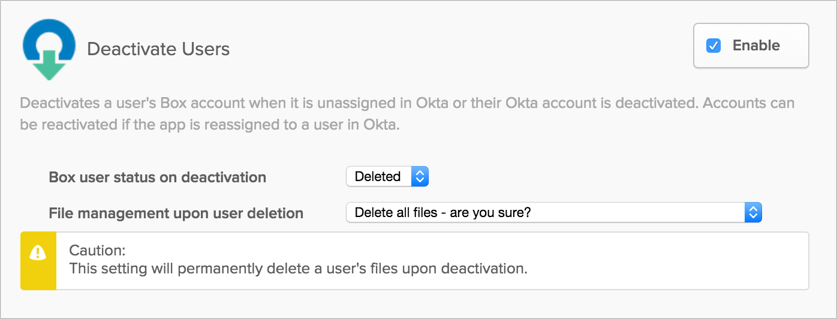

The default status upon deactivation is to make a user Inactive:

To change to a different status upon deactivation, select the Deleted option from the Box user status on deactivation dropdown menu.
Once you select the Deleted option, you need to specify the File management upon user deletion action:
The first file management action once a user is deleted is to Transfer user’s files to account user. If you select this option, you need to enter a valid, active Box account in the text field to which a user's files will be transferred when they are deactivated:

The second file management action once a user is deleted is Do not delete users with files, create manual de-provisioning task. If you select this option, only users with no files in their account will be deleted when deactivated through Okta. A task is also generated when deactivating a user with files requesting manual de-provisioning:

The third file management action once a user is deleted is to Delete all files - are you sure?. Note that if you select this option, files will be permanently deleted from a user's account when they are deactivated:

With the personal folder creation feature, OKTA creates a personal folder for users during provisioning through the admin account. This makes the admin the owner of the created folder, and a copy of the folder is available in the admin account. The new user can be made either an editor or co-owner. If the user is later deactivated with the option to transfer files enabled, this folder is not transferred because it is not owned by the user. The admin's copy of the folder and its contents remains accessible in their account and is not deleted.
Personal folders are usually named after a user's username. If a folder with this name already exists, a user is still created but a personal folder is not be created for them. A task is generated with an explanation of the conflict – after manually addressing the issue, you may resolve this task to complete successful provisioning of this user.